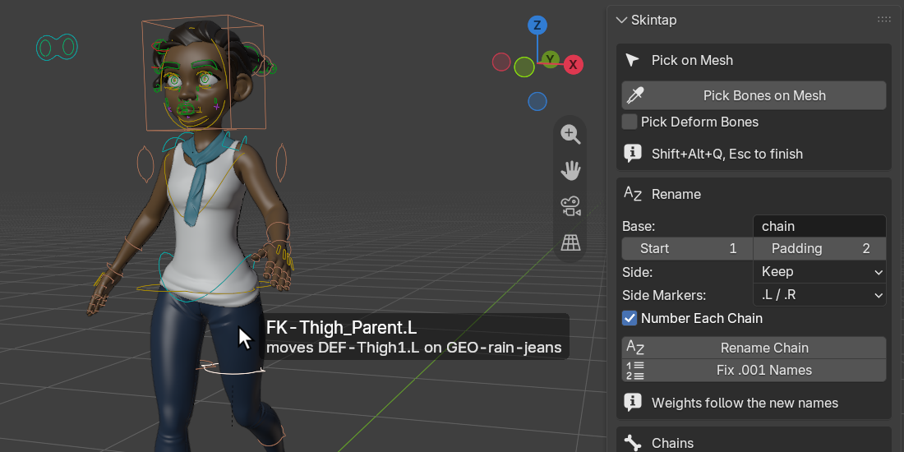
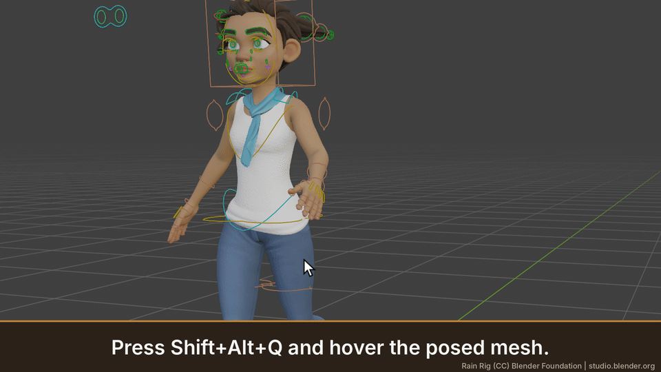
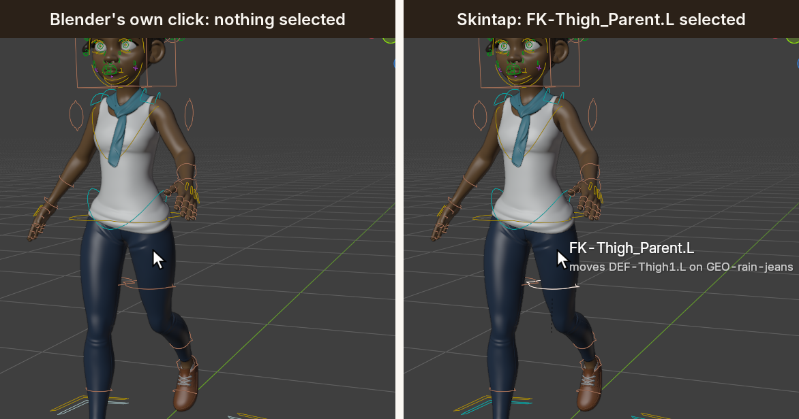
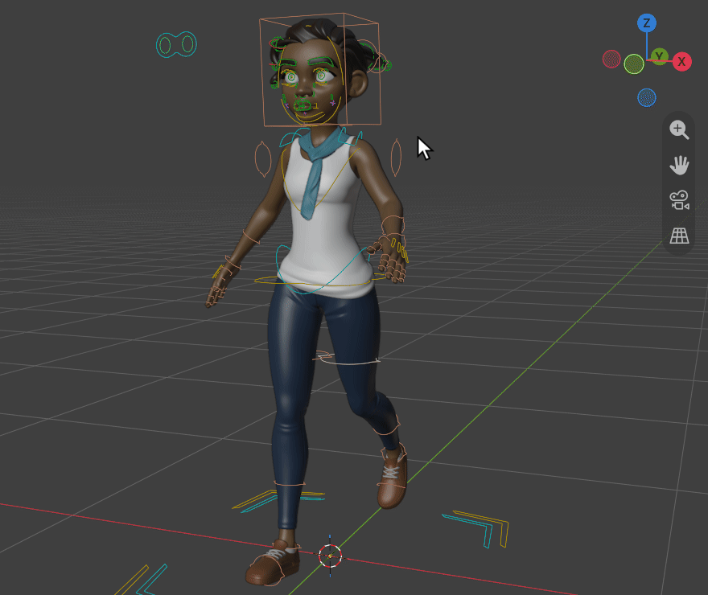
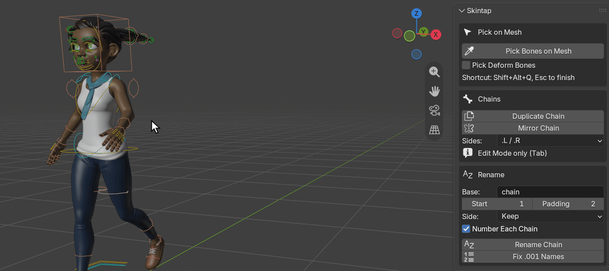
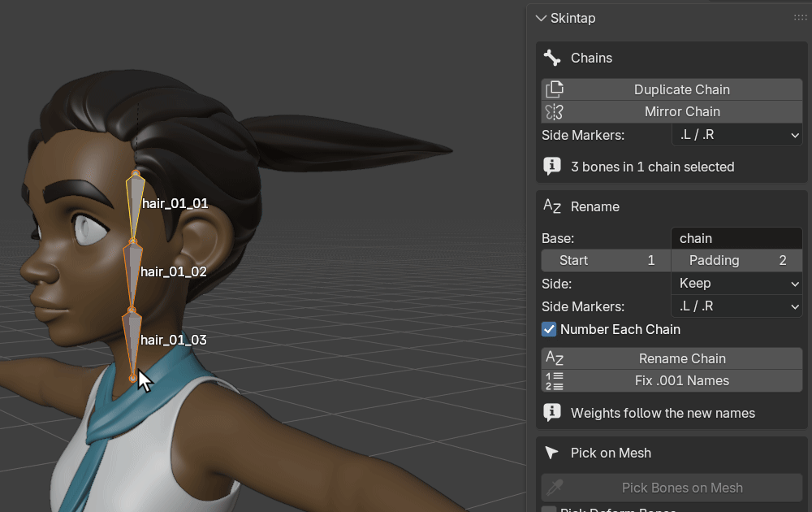
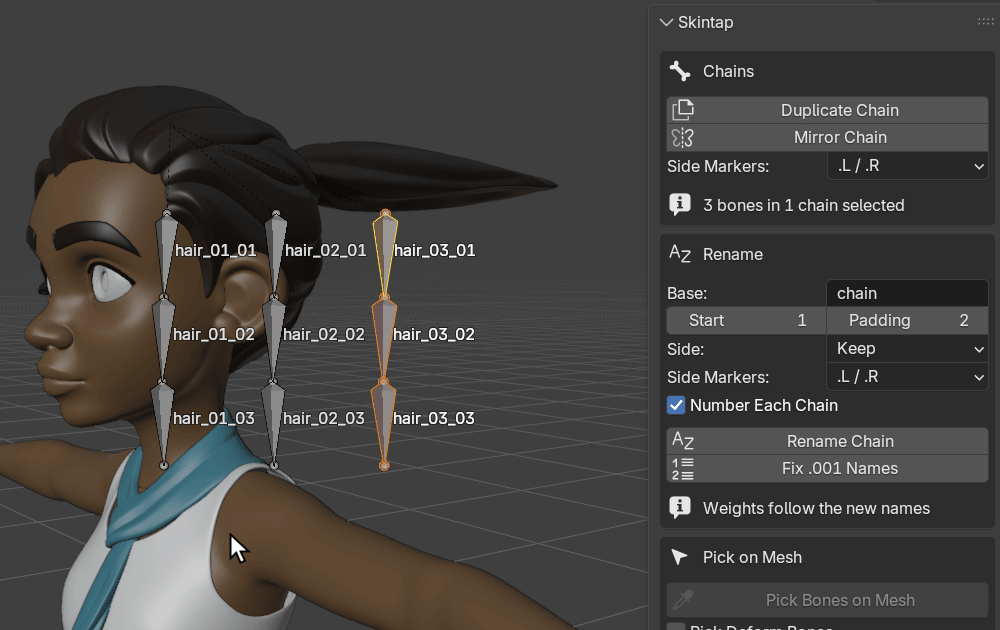
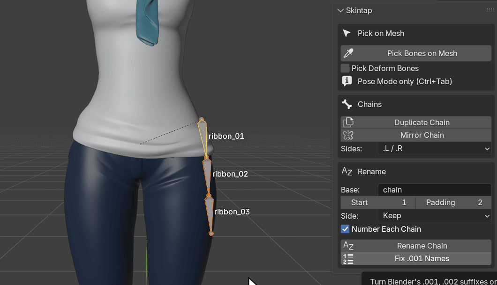
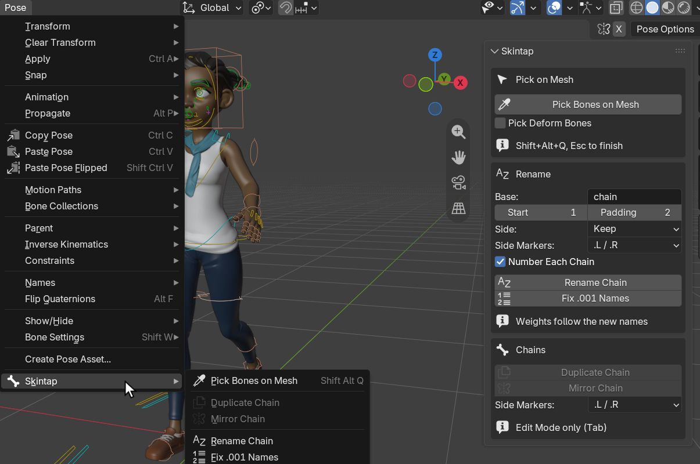

Skintap for Blender

Bones that disappear inside the mesh? Click the posed mesh and Skintap selects the bone that moves it, with no setup. Copy or mirror a bone chain without renaming every .001 copy by hand.
$14, one-time, 12 months of updates and support included, source included (GPL-3.0-or-later). Blender 4.2 LTS and later; tested on 4.2 LTS and 5.2 LTS, on Linux.
Polar checkout · download by email · 14-day refund if it doesn't work as described · no license check, no account · details
Above: Rain, Blender Studio's free production character, posed in Pose Mode. Skintap's picker is running: the label names the control under the cursor and the deform bone it moves on her jeans, and the click has just selected that control.
How these images were made
Every image and GIF on this page is a capture of a real Blender 5.2.3 LTS window on Linux at 1920x960 and UI scale 1.4, with Skintap 1.0.2 installed from its zip through Blender's extension installer (the Install from Disk path). The character is Rain v3.3 as downloaded from studio.blender.org (CC BY 4.0, credit below), in her own file and rig. By script, between shots, we switched her arms and legs to FK, set her rig's Quality to 2 (Subdivision Surface level 2 on every piece of clothing and the body), posed her on her FK controls and set the view; for the chain images we added a three-bone hair strand and a three-bone ribbon to her rig, showed only their bone collection, and hid the viewport's navigation buttons. Every hover, click, Shift-click, menu and key press (Shift+Alt+Q, Esc, G, Shift+D) is a real input event sent to the window; every label, selection, name and status-bar report is Skintap's own. The GIFs were recorded one frame per pointer step and play at 30 frames per second: on this machine Blender draws the viewport in software, slower than that, so the motion here is smoother than it was live. The virtual display has no mouse cursor, so the arrow is drawn into each frame at the pointer's real position.
Watch it work



What it does
- Pick Bones on Mesh (Pose Mode, Shift+Alt+Q). Hover over the posed character: a label next to the cursor names the bone that will be selected, and which deform bone it moves on which mesh. Click selects it and makes it active, Shift-click adds, Esc or right-click ends. Orbit, pan and zoom work while it runs, and one Ctrl+Z undoes a whole picking session. It reads the weights your character already has, on the mesh as it is posed right now: on every separate clothing piece (the piece in front wins), on accessories parented to a bone, and with Subdivision Surface on. Nothing to set up: no vertex groups to paint, no presets, and nothing added to your .blend.
- Finds the control behind a hidden bone. When the bone under the cursor is a hidden deform bone (Rigify's
DEF-bones are), Skintap follows the rig's constraints, then the parents, to the nearest visible control and selects that. It follows the IK/FK switch as it is set. Tick Pick Deform Bones to select the deform bone itself. - Duplicate Chain (Edit Mode). The copy takes the next chain number instead of
.001:hair_01_01..03becomeshair_02_01..03,Bone_12_0099.LbecomesBone_12_0100.L, and a number already taken is skipped. It keeps parenting, roll, deform flag, bone collections, B-Bone segments, custom shapes and constraints; constraints that pointed inside the chain point inside the copy. - Mirror Chain (Edit Mode). Creates the X-mirrored copy, roll included. Bones with no side get one in your convention (
.L/.R,_L/_R,_l/_rorLeft/Right), the source and the copy both; bones that already have a side get it flipped, side words included (ear_left_tipbecomesear_right_tip). - Rename Chain and Fix .001 Names (Pose or Edit Mode). Rename Chain renames root to tip with a base name, start number, padding and side. Fix .001 Names turns Blender's
.001,.002into the chain's own numbers, after Shift+D or Extrude. Vertex groups are renamed with their bones, so weights stay attached. Generated rigs find their bones by name, so Skintap refuses to rename a generated Rigify rig and tells you to rename in the metarig instead.
Every tool says what it did in the status bar, or, when it can't run, why and what to do; each run is one undo step.
In Blender, for real


hair_03. Each copy was moved with G, Y.
hair_03_01.001 to .003.001. Fix .001 Names: "Fixed 3 names: hair_03_01.001 -> hair_04_01; hair_03_02.001 -> hair_04_02; hair_03_03.001 -> hair_04_03".
.L / .R: "Mirrored 3 bones in 1 chain: ribbon_01.L .. ribbon_03.L -> ribbon_01.R .. ribbon_03.R. Source renamed to carry its side". Rain's file has the armature's X-Axis Mirror option on, as many production files do; the mirror is correct with it on.
Character: Rain Rig (CC) Blender Foundation | studio.blender.org, used under CC BY 4.0. We posed her, switched her limbs to FK, and added the hair strand and ribbon bones for the chain images. Rain is not included with Skintap, and Blender Studio does not endorse it.
Which control a click selects
Skintap selects the nearest visible bone that drives the spot, so the answer depends on the rig. Tested on a Rigify-generated human rig with a body and a separate jacket, Blender 4.2 and 5.2, a click from the front on each point selects:
| point | as generated | Tweak hidden, IK | Tweak hidden, FK | Pick Deform Bones on |
|---|---|---|---|---|
| head | head | head | head | DEF-spine.006 |
| neck | tweak_spine.004 | neck | neck | DEF-spine.004 |
| chest (jacket) | tweak_spine.003 | chest | chest | DEF-spine.003 |
| belly (jacket) | tweak_spine.001 | hips | hips | DEF-spine.001 |
| hips | tweak_spine | hips | hips | DEF-spine |
| upper arm L/R (jacket) | upper_arm_tweak.L/.R | upper_arm_ik.L/.R | upper_arm_fk.L/.R | DEF-upper_arm.L/.R |
| left forearm | forearm_tweak.L | hand_ik.L | forearm_fk.L | DEF-forearm.L |
| hand L/R | hand_tweak.L/.R | hand_ik.L/.R | hand_fk.L/.R | DEF-hand.L/.R |
| thigh L/R | thigh_tweak.L/.R | thigh_ik.L/.R | thigh_fk.L/.R | DEF-thigh.L/.R |
| left shin | shin_tweak.L | foot_heel_ik.L | shin_fk.L | DEF-shin.L |
| left foot | foot_tweak.L | foot_heel_ik.L | foot_fk.L | DEF-foot.L |
- Rigify as generated shows its tweak controls, so clicks select tweak controls. Hide the Tweak bone collections to get the IK or FK controls.
- Rain's rig is CloudRig, not Rigify. With her limbs in FK, as on this page, each limb point selects that limb's own FK control (
FK-Upperarm_Parent.L,FK-Forearm.L,FK-Thigh_Parent.L,FK-Shin.L). Her belly and pelvis selectMSTR-Hips, which moves most of her body, and with her limbs in IK, as her file is saved, the leg picks select the foot-roll control and the forearm the root control. On rigs other than Rigify, switch the limb to FK or tick Pick Deform Bones for a precise pick. - Picking, copying and mirroring work on any armature; controller lookup is tested on Rigify.
How we tested
- Against Blender's own click, in a separate review that tried to break Skintap: a grid of points over each posed character in front orthographic view, each clicked with Blender's Pose Mode click (In Front off and on) and with Skintap, and each selected bone then moved to see whether the clicked spot moved with it. Blender's click selected nothing at 52 of 208 points on a Rigify rig as generated, 94 of 208 with its Tweak controls hidden, and 110 of 165 on Rain. Skintap's pick moved the spot at 208 of 208, 208 of 208 and 159 of 165.
- On Rain with every piece subdivided (Subdivision Surface level 2; 96,560 vertices on her body alone): 14 of 14 test points from head to shoe land on the right clothing piece and the right deform bone, on Blender 4.2 and 5.2.
- Speed. On Rain, the first pick after a pose change took 13 ms at most and repeat picks 0.33 to 0.48 ms. On a deformed test mesh of 103,041 vertices, the median of 50 picks was 0.02 to 0.03 ms; the first pick after a pose change, when Blender builds its ray-cast tree, took 29 to 70 ms.
- Names. Every Duplicate Chain and Mirror Chain test checks that no name ends in
.001and that no bone outside the selection is renamed, including hidden bones that Blender still flags as selected; Mirror and Duplicate are also tested with the armature's X-Axis Mirror on. - Undo, in a real Blender window on 4.2 and 5.2: for every tool, one Ctrl+Z restores the bones, vertex groups and constraints, and redo brings them back.
- No new data. After picking, the file has the same data blocks, vertex groups, attributes and custom properties as before.
- The automated suite, including a session in the real Blender window, runs on Blender 4.2 and 5.2 on every change.
Known limits
- Tested on Linux, on Blender 4.2 LTS and 5.2 LTS. Windows and macOS have not been tested yet.
- One armature at a time: the picker works for the active armature in Pose Mode and picks only meshes it deforms.
- A mesh without vertex groups (deformed by envelopes only) cannot be picked, nor a mesh whose modifiers rebuild it without its vertex groups (Remesh, some Geometry Nodes setups). A mesh scaled to zero is skipped.
- The control lookup follows constraints and parents, not drivers' targets or rig scripts. On Rigify in IK, the shin and foot select the heel-roll control. On other rigs the nearest visible driver can be a master control (see above).
- On Rigify, Pick Deform Bones selects the
DEF-bone for inspection; it follows its controls, so moving it by hand does not move the mesh. - With GPU Subdivision on, Blender also computes the smooth surface on the CPU for the first pick after a pose change; that cost has not been measured on a GPU.
- Renaming refuses generated Rigify rigs, and armatures that carry Auto-Rig Pro's markers (tested on an armature built with those markers, not on a real Auto-Rig Pro rig). Linked and library-override armatures are refused by the chain tools; picking on a library override works.
- Mirror Chain copies constraint values as they are and leaves constraint targets outside the chain unchanged. Copies get no weights, drivers or keyframes.
- Names are limited to Blender's 63 bytes (63 Latin letters, or 21 Chinese or Japanese characters); a tool whose new names would not fit refuses and changes nothing.
- After Blender's own Shift+D in Edit Mode, undoing Fix .001 Names does not bring back the constraints Shift+D copied (Blender does the same when you leave Edit Mode and undo). Duplicate Chain doesn't have this problem.
- The label next to the cursor can run under the sidebar when you hover near it; the status bar repeats what was selected.
- The panel settings reset when Blender restarts; they are kept out of your .blend on purpose.
Details
- Buying: secure checkout by Polar. The download arrives by email right after payment; the zip is the extension itself, with the full source and license inside. No license key is checked and no account is needed. 12 months of updates and support are included, with no recurring charge; what you bought stays yours. If it doesn't work as described and we can't fix it, email us within 14 days of purchase for a full refund (terms). Questions first? support@ochrestack.com.
- Blender 4.2 LTS and later; tested on 4.2 LTS and 5.2 LTS on Linux. Installs as a Blender extension from the zip. Uses only Blender's own Python API, with no extra packages.
- GPL-3.0-or-later. Full source code included with your purchase.
- Privacy: no network calls, no telemetry, no account. Skintap collects nothing, and it writes nothing outside your .blend file and Blender's preferences (its shortcut).
- Support: support@ochrestack.com. Send your Blender version, what you did and what you expected; a small .blend helps most.
Documentation
A one-page quick start: Skintap quick start.
Install
- After checkout, download
skintap-1.0.2.zipfrom the link in Polar's email. Install the zip itself; do not unzip it. (If your browser unzips downloads by itself, as Safari can, turn that off and download again.) - In Blender (4.2 or newer), open Edit > Preferences > Get Extensions.
- Open the drop-down menu (⌄) at the top right, choose Install from Disk... and pick the zip. Dragging the zip onto Blender's window also works.
- Press N in the 3D Viewport and open the Skintap tab.
If Get Extensions asks about internet access, Continue Offline is fine: Skintap needs none.
$14 once, source included, 12 months of updates and support · Polar checkout · 14-day refund if it doesn't work as described · tested on Blender 4.2 LTS and 5.2 LTS, Linux